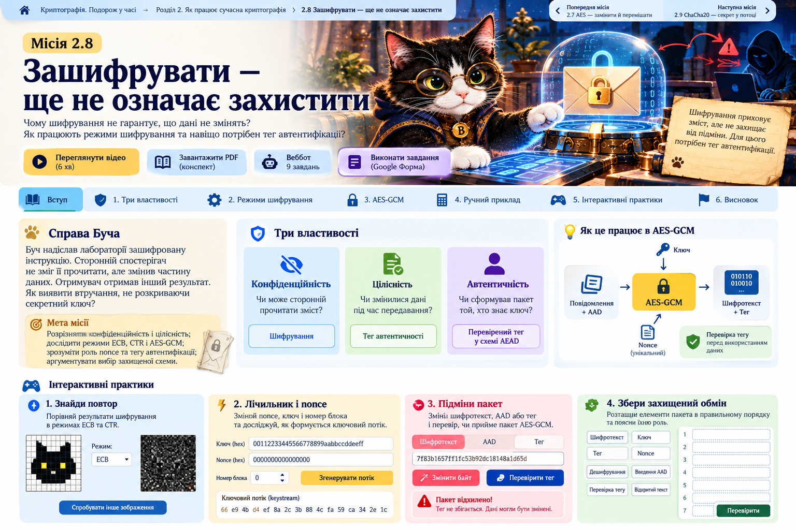

Зашифрувати — ще не означає захистити
Буч отримав зашифровану посилку. Ніхто не прочитав її, але хтось змінив дані. Як це виявити?
Проблема → модель → експеримент → висновок

Три різні запитання
Конфіденційність
Чи може сторонній прочитати зміст? Шифрування приховує дані.Цілісність
Чи змінилися дані під час передавання? Потрібна перевірка підміни.Автентичність
Чи сформував пакет той, хто має належний секретний ключ? У AEAD перевіряють тег.Режими: ECB, CTR та AES-GCM
ECB
A | B | A | A → X | Y | X | X
Повторювані блоки залишають видиму структуру. Це умовна модель, не AES.
CTR
Потік = EK(nonce || лічильник)
Дані XOR потік. Не можна повторювати ключ + nonce. Сам CTR не перевіряє цілісність.
AES-GCM
Ключ + унікальний nonce + текст + AAD → шифротекст + тег
Перевірка тегу потрібна до використання розшифрованих даних.
Ручна перевірка: XOR без тегу
Відкриті дані 00110110, потік 10101001. Спробуйте перемкнути біт шифротексту.
Це навчальна модель потокового XOR, а не реалізація AES-GCM.
Чотири інтерактивні практики
Компетентнісне завдання
Шкільна лабораторія передає результати вимірювань. Команда А пропонує AES-ECB, Б — AES-CTR без перевірки цілісності, В — AES-GCM з унікальним nonce. Який варіант оберете? Що побачить або зможе змінити спостерігач? Як отримувач перевірить пакет?